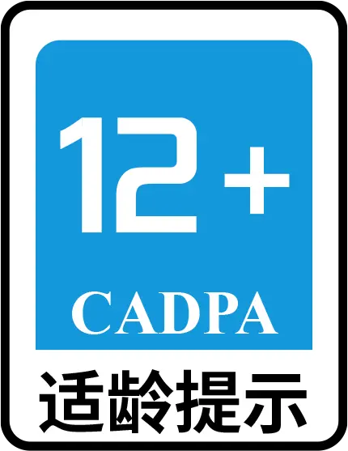
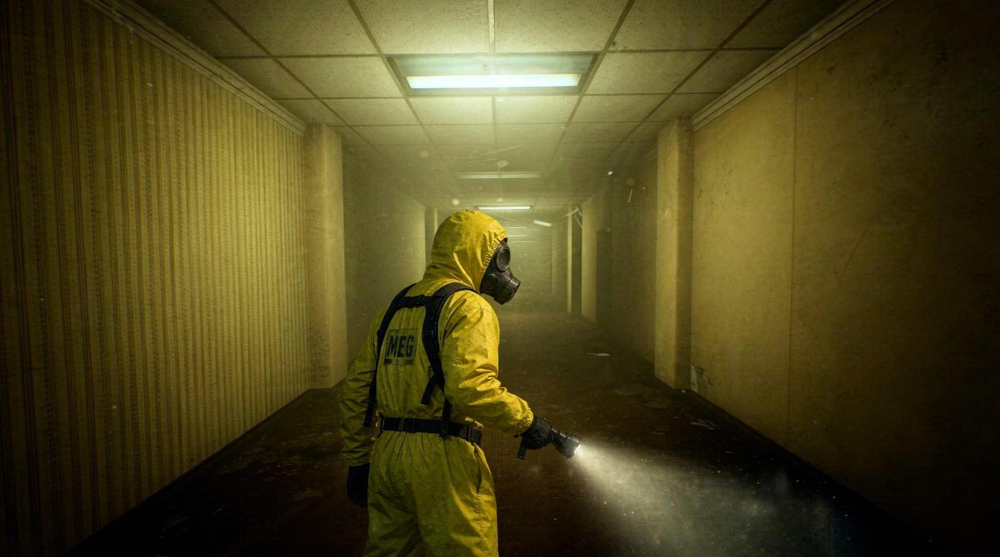

健康游戏忠告
抵制不良游戏，拒绝盗版游戏。
注意自我保护，谨防受骗上当。
适度游戏益脑，沉迷游戏伤身。
合理安排时间，享受健康生活。

本游戏的适龄提示标识见画面中的图片。该标识依据中国音像与数字出版协会《游戏适龄提示规范》评定，综合考虑了游戏的内容、玩法、视听表现与社交属性。
年龄未达到标识要求的玩家，请在监护人指导下使用。
本游戏含有黑暗环境、突发惊吓音效与实体追逐情节，可能对部分玩家造成不适；如感到不适请立即停止游戏。
请合理安排游戏时间，注意休息，享受健康生活。

要登进去，得先让已经登录的那边同意。写个理由，对方会看到。
对方填写的理由：
同意之后你会被挤下线，对方将接手这个账号。
站点暂时没加载出来
www.tutorial.thebackrooms2d.de5.net
这里不缓存站点内容，免得你看到的是几个月前的旧版本。
点「刷新内容」重连，或「复制网址」到浏览器里看。
如果你不小心，在错误的地方脱离现实，你就会进入后室。
眼前只有发黄的墙纸、潮湿的地毯和无尽的房间，头顶的荧光灯嗡嗡作响。
黑暗中有东西在注视你……
目标：在 Level 0 里找到闪烁的墙壁
或白色铁门，一层层往下逃。
Level 3 发电站：在 Level 2 找到未上锁的铁栅栏门切入；离开要先找到电梯钥匙，
再到电力室合上电梯电力开关，最后搭乘电梯。
按 Tab 打开背包，按 H 打开档案手册；把层级密钥放进快捷栏后，对着任意一扇门按 G 切层
（那扇门从此失效）。主菜单的「服装」可以换装。
Level 5 恐怖旅馆：主厅 / 贝弗莉室 / 锅炉房三个区域，靠门与电梯穿梭；深入锅炉房可切到 Level 6。
Level 6 熄灯：彻底黑暗，手电无效。碰到墙会留下一个点，贴着墙走会连成线 —— 它们会慢慢褪掉。
Level 7 深海恐惧症：从门廊下潜，找齐潜水服与潜艇，去午夜带海底的岩洞。
Level 8 岩洞系统：毒气、涨潮、蜘蛛巢与牧蛇；找到那处绿色出口即可穿出。
枢纽（隐秘层级）：到过某一层不算数，枢纽里那扇门仍旧锁着 —— 得先在该层找到与它绑定的层级密钥，
再拿回枢纽开门；开门不消耗钥匙，此后这扇门一直开着。只有 Level 1 / Level 11 不需要密钥。
密钥也能插进没有编号的锁孔门直接切层，钥匙得一直留在锁孔里，身后的回程门才作数。
散落的泛黄纸张是流浪者留下的日志与档案——
站到纸片上才能阅读，读过的会收进档案手册，随时翻看。
走廊里立着关着的门：门后一片漆黑，推开才知道里面有什么。
它比你先到一步。
黑暗重新归于平静……
正在进入宜居地带
黑暗在原地等待你……
返回主菜单会放弃当前这一局；已收集的档案、服装与结局都会保留。
点「开始验证」—— 逐个层级检查：
1. 出口是否存在（必死层级 Level 666 / 黯洃銫 不算）
2. 出口是否真的通向另一个已存在的层级
3. 出口能不能走到、有没有被画成桌子、有没有卡在墙里
4. 该层该出现的区域是否出现、体积是否正常
（Level 5 侧厅 / Level 1 花园段 / Level 11 医院 / Level 0.7 六个区域 …）